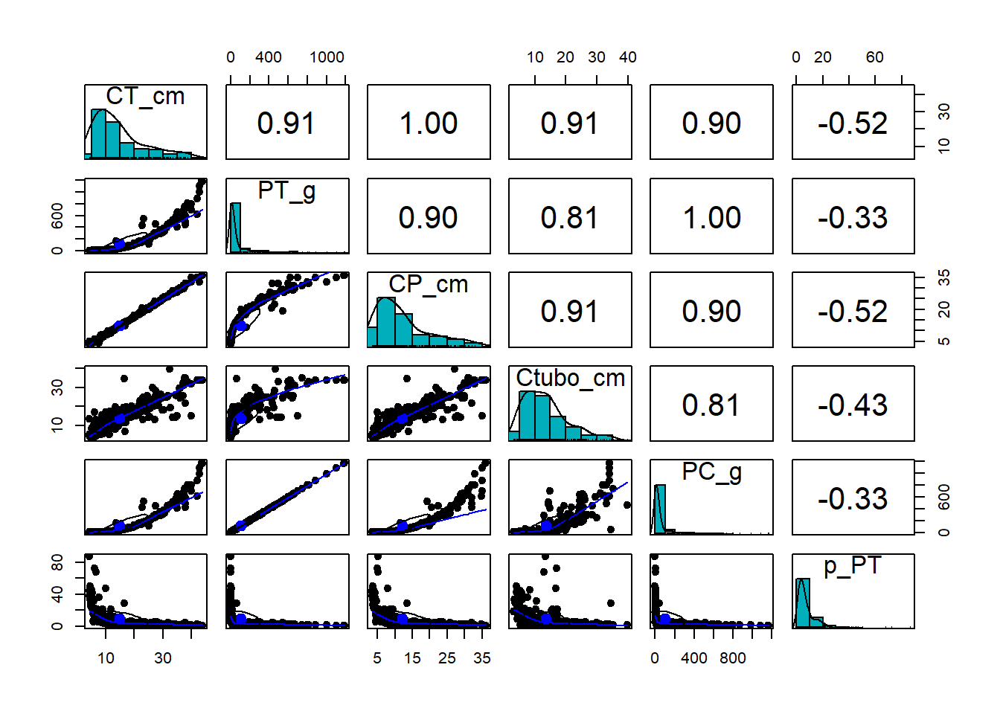

15 Regressão múltipla
RESUMO
A estatística descritiva tem um papel importante a desempenhar na ciência. Quando problemas específicos são tratados na ciência, os dados precisam ser coletados, analisados e apresentados de forma concisa para que outros possam se beneficiar do que foi encontrado.
Apresentação
Existem diferentes abordagens para regressão múltipla, destacando-se a regressão simultânea (ou padrão), a regressão hierárquica e a regressão stepwise (“passo-a-passo”). Na regressão simultânea, todas as variáveis independentes entram no modelo ao mesmo tempo, permitindo avaliar a contribuição conjunta dos preditores sobre a variável resposta. Na regressão hierárquica, a ordem de entrada das variáveis é definida previamente com base em conhecimento teórico ou hipóteses biológicas. Já na regressão stepwise, a inclusão ou remoção das variáveis ocorre automaticamente a partir de critérios estatísticos, buscando selecionar os melhores preditores do modelo. A regressão stepwise pode ainda ser, forward, backward ou mixed, dependendo da ordem na qual as variáveis são incorporadas. Veremos mais sobre isso a serguir.
A aplicação da regressão múltipla exige o atendimento de alguns pressupostos estatísticos. Entre os principais estão:
- Número adequado de observações em relação ao número de preditores
- Ausência de outliers extremos
- Ausência de multicolinearidade entre as variáveis independentes
- Adequação dos resíduos do modelo quanto à normalidade, linearidade, homocedasticidade e independência.
No contexto da biometria de Cichla ocellaris, a regressão múltipla pode ser utilizada para investigar quais variáveis morfométricas melhor predizem o peso corporal dos indivíduos. Nesse caso, o peso total (PT_g) pode ser utilizado como variável dependente, enquanto variáveis como comprimento total (CT_cm), comprimento padrão (CP_cm) e circunferência intestinal (Cint_cm) podem atuar como variáveis independentes. Assim, o modelo busca explicar a variação do peso corporal a partir de múltiplos atributos biométricos dos indivíduos analisados.
A regressão múltipla é uma extensão da correlação bivariada e tem como objetivo predizer uma variável dependente a partir de duas ou mais variáveis independentes. Esse método é amplamente utilizado quando as variáveis preditoras apresentam associação entre si e também com a variável resposta. As variáveis independentes podem ser contínuas ou categóricas, embora variáveis categóricas devam ser previamente convertidas em variáveis dummy para serem incluídas no modelo. Em contraste, a variável dependente deve ser medida em uma escala contínua. Se a variável dependente não for contínua, então a análise discriminante é apropriada (COAKES; STEED, 2001).
O resultado da regressão é uma equação que representa a melhor previsão de uma variável dependente a partir de várias variáveis independentes. Para isso, existem três principais modelos de regressão. Regressão padrão ou simultânea, regressão hierárquica e regressão stepwise (“passo-a-passo”). Esses modelos diferem em dois aspectos: primeiro, no tratamento da variabilidade sobreposta devido à correlação das variáveis independentes e, segundo, em termos da ordem de entrada das variáveis independentes na equação. No modelo padrão ou simultâneo, todas as variáveis independentes entram na equação de regressão ao mesmo tempo porque se deseja examinar a relação entre todo o conjunto de preditores e a variável dependente. Na regressão múltipla hierárquica, determina-se a ordem de entrada das variáveis independentes com base no conhecimento teórico. Na regressão stepwise , o número de variáveis independentes inseridas e a ordem de entrada são determinados por critérios estatísticos gerados pelo procedimento stepwise.
O método de entrada na regressão stpewise pode ser forward, backward ou uma combinação de ambos (mixed). A seleção forward envolve a entrada dos preditores um de cada vez. A ordem de entrada e se o preditor será eventualmente aceito são decididas com base em se o teste F excede um determinado valor crítico e se um nível alfa crítico é atingido. A seleção backward começa com todas as variáveis na equação e gradualmente elimina-se os preditores de baixo desempenho com base em se o valor F parcial é menor que um valor crítico. O critério padrão também deve ser atendido. A seleção mixed (stepwise) é uma combinação dos procedimentos forward e backward. Ela permite a remoção posterior de variáveis que foram previamente inseridas. A escolha da técnica depende amplamente dos objetivos do pesquisador.
15.0.0.1 Pressupostos
Uma série de pressupostos sustenta o uso da regressão:
Razão entre casos e variáveis independentes: O número de casos necessários depende do tipo de modelo de regressão a ser utilizado. Para regressão padrão ou hierárquica, idealmente deve-se ter vinte vezes mais casos do que preditores, enquanto ainda mais casos são necessários para regressão stepwise. O requisito mínimo é ter pelo menos cinco vezes mais casos do que variáveis independentes (COAKES; STEED, 2001).
Outliers: Casos extremos têm impacto considerável na solução de regressão e devem ser excluídos ou modificados para reduzir sua influência. Outliers univariados podem ser detectados durante a triagem de dados, conforme descrito na seção Gráficos de histograma e boxplot. Outliers multivariados podem ser detectados usando métodos estatísticos, como a distância de Mahalanobis, e métodos gráficos, como gráficos de dispersão dos resíduos (isso é abordado na
PARTE Vdeste livro). A decisão de remover outliers do conjunto de dados deve ser tomada com cuidado, porque sua exclusão frequentemente resulta na geração de outros casos discrepantes.Multicolinearidade e singularidade: Multicolinearidade refere-se a altas correlações entre as variáveis independentes, enquanto singularidade ocorre quando existem correlações perfeitas entre variáveis independentes. Esses problemas afetam a forma como se interpretam quaisquer relações entre os preditores (VIs) e a variável dependente, e podem ser detectados examinando-se a matriz de correlação, as correlações múltiplas ao quadrado e as tolerâncias. A maioria dos programas computacionais possui valores padrão para multicolinearidade. É importante não admitir-mos variáveis que representem esse tipo de problema.
Normalidade, linearidade, homocedasticidade e independência dos resíduos: Um exame dos gráficos de dispersão dos resíduos permite testar os pressupostos acima. Assume-se que as diferenças entre os escores observados e previstos da variável dependente sejam normalmente distribuídas. Além disso, assume-se que os resíduos tenham uma relação linear com os escores previstos da variável dependente e que a variância dos resíduos seja a mesma para todos os escores previstos. Desvios leves da linearidade não são graves. Desvios moderados a extremos podem levar a uma séria subestimação de uma relação.
O pressuposto 1 relaciona-se ao delineamento da pesquisa. Os pressupostos 2, 3 e 4 são avaliados por meio da análise de regressão.
Com esse tipo de análise, é possível responder questões como:
Qual a contribuição conjunta das variáveis biométricas para a predição do peso corporal?
Qual variável apresenta maior poder preditivo?
Se determinadas hipóteses biológicas previamente propostas são sustentadas pelos dados observados.
Um gerente de marketing de uma grande rede de supermercados queria determinar o efeito do espaço de prateleira e do preço sobre as vendas de alimentos para animais de estimação. Uma amostra aleatória de quinze lojas de mesmo tamanho foi selecionada, e foram registrados as vendas, o espaço de prateleira em metros quadrados e o preço por quilograma. Para demonstrar a aplicação dos três modelos de regressão, você utilizará o mesmo conjunto de dados para responder a três perguntas:
- Qual contribuição tanto o espaço de prateleira quanto o preço oferecem para a previsão das vendas de alimentos para animais de estimação?
- Qual é o melhor preditor das vendas de alimentos para animais de estimação?
- Pesquisas anteriores sugeriram que o espaço de prateleira é o principal preditor das vendas de alimentos para animais de estimação. Essa hipótese está correta?
15.1 Organização básica
dev.off() #apaga os graficos, se houver algum
rm(list=ls(all=TRUE)) #limpa a memória
cat("\014") #limpa o console 15.1.1 Organizando os dados
library(openxlsx)
univ <- read.xlsx("D:/Elvio/OneDrive/Disciplinas/_EcoNumerica/5.Matrizes/tucuna.xlsx",
rowNames = T, colNames = T,
sheet = "tucuna")
head(univ, 10)
head(univ[, 1:5], 10)## CT_cm PT_g CP_cm Ctubo_cm PC_g p_PT Pest_g Cest_cm gr_est ir_est
## TU001 32.4 468.8 27.2 39.8 458.9 2.111775 3.9 7.7 I 0.8319113
## TU002 33.4 520.0 28.8 14.3 507.4 2.423077 5.9 10.0 I 1.1346154
## TU003 27.3 301.5 23.8 13.0 283.4 6.003317 15.5 10.2 III 5.1409619
## TU004 13.2 28.2 11.0 16.5 27.7 1.773050 0.3 4.3 I 1.0638298
## TU005 14.3 38.9 11.9 15.5 37.7 3.084833 0.8 4.5 III 2.0565553
## TU006 22.7 431.7 20.5 24.2 418.7 3.011350 9.9 6.4 III 2.2932592
## TU007 23.2 544.0 19.2 25.0 520.1 4.393382 6.8 7.5 II 1.2500000
## TU008 13.5 161.6 11.5 17.5 157.0 2.846535 4.1 6.8 II 2.5371287
## TU009 24.6 200.5 20.5 25.7 195.9 2.294264 2.5 7.6 II 1.2468828
## TU010 19.4 86.7 16.0 18.3 84.5 2.537486 0.7 5.1 I 0.8073818
## Pint_g Cint_cm gr_int ir_int Pgon_g Cgon_cm emg ig
## TU001 4.8 38.3 II 1.0238908 1.2 7 IMATURO 0.25597270
## TU002 5.3 13.3 II 1.0192308 1.4 6.5 MADURO 0.26923077
## TU003 2.4 12.0 II 0.7960199 0.2 7.7 EM MATURACAO 0.06633499
## TU004 0.1 16.0 II 0.3546099 0.1 5 IMATURO 0.35460993
## TU005 0.3 15.0 II 0.7712082 0.1 3.2 IMATURO 0.25706941
## TU006 2.7 23.7 II 0.6254343 0.4 7.8 EM MATURACAO 0.09265694
## TU007 3.3 24.5 II 0.6066176 13.8 7.9 MADURO 2.53676471
## TU008 0.4 17.0 I 0.2475248 0.1 2.5 IMATURO 0.06188119
## TU009 2.0 25.3 II 0.9975062 0.1 6.5 EM MATURACAO 0.04987531
## TU010 1.4 17.7 II 1.6147636 0.1 6 IMATURO 0.11534025
## mes periodo estação sexo
## TU001 ago chuvoso inverno MACHO
## TU002 ago chuvoso inverno MACHO
## TU003 ago chuvoso inverno MACHO
## TU004 ago chuvoso inverno MACHO
## TU005 ago chuvoso inverno MACHO
## TU006 set chuvoso inverno MACHO
## TU007 set chuvoso inverno FEMEA
## TU008 set chuvoso inverno imaturo
## TU009 set chuvoso inverno MACHO
## TU010 set chuvoso inverno MACHO
## CT_cm PT_g CP_cm Ctubo_cm PC_g
## TU001 32.4 468.8 27.2 39.8 458.9
## TU002 33.4 520.0 28.8 14.3 507.4
## TU003 27.3 301.5 23.8 13.0 283.4
## TU004 13.2 28.2 11.0 16.5 27.7
## TU005 14.3 38.9 11.9 15.5 37.7
## TU006 22.7 431.7 20.5 24.2 418.7
## TU007 23.2 544.0 19.2 25.0 520.1
## TU008 13.5 161.6 11.5 17.5 157.0
## TU009 24.6 200.5 20.5 25.7 195.9
## TU010 19.4 86.7 16.0 18.3 84.515.1.1.1 Correlograma e redução de variáveis desnecessárias
# Correlograma e redução de variáveis desnecessárias
library(psych)
colnames(univ)
#png("fig-nome.png")
pairs.panels(univ[,1:6], #colunas de interesse
method = "pearson", # correlation method
scale = FALSE, lm = FALSE,
hist.col = "#00AFBB", pch = 19,
density = TRUE, # show density plots
ellipses = TRUE, # show correlation ellipses
alpha = 0.5)
#dev.off()
cor <- cor(univ[,1:6])
cor
library(corrplot)
#png("fig-nome.png")
corrplot(cor, method = "circle")
#dev.off()
## Impressão em papel
#win.print()
#corrplot(cor, method = "circle")
#dev.off()## [1] "CT_cm" "PT_g" "CP_cm" "Ctubo_cm" "PC_g" "p_PT"
## [7] "Pest_g" "Cest_cm" "gr_est" "ir_est" "Pint_g" "Cint_cm"
## [13] "gr_int" "ir_int" "Pgon_g" "Cgon_cm" "emg" "ig"
## [19] "mes" "periodo" "estação" "sexo"
## CT_cm PT_g CP_cm Ctubo_cm PC_g p_PT
## CT_cm 1.0000000 0.9057485 0.9990120 0.9091518 0.9039903 -0.5189589
## PT_g 0.9057485 1.0000000 0.9039503 0.8093258 0.9999423 -0.3320403
## CP_cm 0.9990120 0.9039503 1.0000000 0.9071124 0.9021382 -0.5159241
## Ctubo_cm 0.9091518 0.8093258 0.9071124 1.0000000 0.8062440 -0.4330032
## PC_g 0.9039903 0.9999423 0.9021382 0.8062440 1.0000000 -0.3321762
## p_PT -0.5189589 -0.3320403 -0.5159241 -0.4330032 -0.3321762 1.000000015.2 Sobre os dados
ATENÇÃO
Os links para baixar as planilhas necessárias para repetir esse tutorial podem ser encontrados na seção Arquivos disponíveis do Capítulo Bases de dados.
Ou, baixe aqui o arquivo ppbio06p-bentos.xlsx
Também usaremos uma tabela de agrupamentos.
ATENÇÃO
Os links para baixar as planilhas necessárias para repetir esse tutorial podem ser encontrados na seção Arquivos disponíveis do Capítulo Bases de dados.
Ou, baixe aqui o arquivo ppbio06-grupos.xlsx
15.3 Organização básica
dev.off() #apaga os graficos, se houver algum
rm(list=ls(all=TRUE)) #limpa a memória
cat("\014") #limpa o console
library(openxlsx)
densidade <- read.xlsx("D:/Elvio/OneDrive/Disciplinas/_EcoNumerica/5.Matrizes/ppbio06p-bentos.xlsx",
rowNames = T,
colNames = T,
sheet = "densidade")
habitat <- read.xlsx("D:/Elvio/OneDrive/Disciplinas/_EcoNumerica/5.Matrizes/ppbio06p-amb.xlsx",
rowNames = T,
colNames = T,
sheet = "ano1")
grupos <- read.xlsx("D:/Elvio/OneDrive/Disciplinas/_EcoNumerica/5.Matrizes/ppbio06-grupos.xlsx",
rowNames = T,
colNames = T,
sheet = "bentosp")
densidade[1:5,1:5] #[1:5,1:5] mostra apenas as linhas e colunas de 1 a 5.
# Removendo linhas e colunas zeradas
rownames(densidade)
rowSums(densidade)
colSums(densidade)
matriz <- densidade
# Linhas zeradas
sum <- rowSums(matriz)
sum
zero_sum <- rownames(matriz)[which(rowSums(matriz) == 0)]
zero_sum # nomes das linhas zeradas
m_part_rows <- matriz[(rowSums(matriz) != 0), ] #em != a exclamação inverte o sentido
zero_sum2 <- rownames(m_part_rows)[which(rowSums(m_part_rows) == 0)]
zero_sum2 #nomes das linhas zeradas
sum <- rowSums(m_part_rows)
sum
# Colunas zeradas
sum <- colSums(m_part_rows)
sum
zero_sum <- names(which(colSums(m_part_rows) == 0))
zero_sum #nomes das espécies zeradas
m_part_cols <- m_part_rows[, (colSums(m_part_rows) != 0)] #remove colunas zeradas
zero_sum2 <- names(which(colSums(m_part_cols) == 0))
zero_sum2 #nomes das espécies zeradas
sum <- colSums(m_part_cols)
sum
m_dens <- as.data.frame(m_part_cols)
# Particionando a matriz ambiental
rownames(habitat)
del_rows <- c("B-A-MU-1", "B-R-EP-1")
del_rows
m_hab <- habitat[!(row.names(habitat) %in% c(del_rows)),]
m_hab
# Particionando tabela de grupos
t_grps <- grupos[!(row.names(grupos) %in% del_rows),]
# Salvando as matrizes finais particionadas
write.table(m_dens, "m_dens.csv",
sep = ";", dec = ".", #"\t",
row.names = TRUE,
quote = TRUE,
append = FALSE)
write.table(t_grps, "t_grps.csv",
sep = ";", dec = ".", #"\t",
row.names = TRUE,
quote = TRUE,
append = FALSE)
write.table(m_hab, "m_hab.csv",
sep = ";", dec = ".", #"\t",
row.names = TRUE,
quote = TRUE,
append = FALSE)
t_grps <- read.csv("t_grps.csv",
sep = ";", dec = ".",
row.names = 1,
header = TRUE,
na.strings = NA)
m_dens <- read.csv("m_dens.csv",
sep = ";", dec = ".",
row.names = 1,
header = TRUE,
na.strings = NA)
m_hab <- read.csv("m_hab.csv",
sep = ";", dec = ".",
row.names = 1,
header = TRUE,
na.strings = NA)
# Particionando a matriz de contagem
contagem <- read.xlsx("D:/Elvio/OneDrive/Disciplinas/_EcoNumerica/5.Matrizes/ppbio06p-bentos.xlsx",
rowNames = T,
colNames = T,
sheet = "contagem")
contagem[1:5,1:5] #[1:5,1:5] mostra apenas as linhas e colunas de 1 a 5.
matriz <- contagem
# Linhas zeradas
sum <- rowSums(matriz)
sum
zero_sum <- rownames(matriz)[which(rowSums(matriz) == 0)]
zero_sum # nomes das linhas zeradas
m_part_rows <- matriz[(rowSums(matriz) != 0), ] #em != a exclamação inverte o sentido
zero_sum2 <- rownames(m_part_rows)[which(rowSums(m_part_rows) == 0)]
zero_sum2 #nomes das linhas zeradas
sum <- rowSums(m_part_rows)
sum
# Colunas zeradas
sum <- colSums(m_part_rows)
sum
zero_sum <- names(which(colSums(m_part_rows) == 0))
zero_sum #nomes das espécies zeradas
m_part_cols <- m_part_rows[, (colSums(m_part_rows) != 0)] #remove colunas zeradas
zero_sum2 <- names(which(colSums(m_part_cols) == 0))
zero_sum2 #nomes das espécies zeradas
sum <- colSums(m_part_cols)
sum
m_cont <- as.data.frame(m_part_cols)
# Salvando a matriz final
write.table(m_cont, "m_cont.csv",
sep = ";", dec = ".", #"\t",
row.names = TRUE,
quote = TRUE,
append = FALSE)
m_cont <- read.csv("m_cont.csv",
sep = ";", dec = ".",
row.names = 1,
header = TRUE,
na.strings = NA)## Acariformes Ampularidae Atyidae Baetidae Belastomatidae
## S-CI-R-1 0.00 0.000000 0 0.000000 0
## S-CI-R-2 0.00 0.000000 0 2.083333 0
## S-CI-R-3 93.75 2.083333 0 177.083333 0
## S-CI-R-4 0.00 4.166667 0 8.333333 0
## B-SA-A-1 0.00 0.000000 0 0.000000 0
## [1] "S-CI-R-1" "S-CI-R-2" "S-CI-R-3" "S-CI-R-4" "B-SA-A-1" "B-SA-A-2"
## [7] "B-SA-A-3" "B-SA-A-4" "B-MU-A-2" "B-MU-A-3" "B-MU-A-4" "B-EP-R-2"
## [13] "B-EP-R-3" "B-EP-R-4" "S-RE-A-1" "S-RE-A-2" "S-RE-A-3" "S-RE-A-4"
## [19] "S-SE-R-1" "S-SE-R-2" "S-SE-R-3" "S-SE-R-4"
## S-CI-R-1 S-CI-R-2 S-CI-R-3 S-CI-R-4 B-SA-A-1 B-SA-A-2
## 62.500000 3022.916667 9010.416667 2029.166667 10.416667 29.166667
## B-SA-A-3 B-SA-A-4 B-MU-A-2 B-MU-A-3 B-MU-A-4 B-EP-R-2
## 31.250000 83.333333 6.250000 8.333333 25.000000 2895.833333
## B-EP-R-3 B-EP-R-4 S-RE-A-1 S-RE-A-2 S-RE-A-3 S-RE-A-4
## 927.083333 2791.666667 3345.833333 2252.083333 2829.166667 3629.166667
## S-SE-R-1 S-SE-R-2 S-SE-R-3 S-SE-R-4
## 64.583333 2639.583333 8731.250000 14231.250000
## Acariformes Ampularidae Atyidae Baetidae Belastomatidae
## 93.750000 8.333333 122.916667 233.333333 4.166667
## Caenidae Ceratopogonidae Coenagrionidae Conchostraca Corixidae
## 318.750000 156.250000 37.500000 375.000000 1833.333333
## Curculionidae Chaoboridae Chironomidae_L Chironomidae_P Dytiscidae_L
## 12.500000 4.166667 13839.583333 289.583333 12.500000
## Dytiscidae_A Gerridae Gomphidae Glossosomatidae Hidrophilidae_L
## 70.833333 4.166667 83.333333 12.500000 485.416667
## Hidrophilide_A Hirudinea Leptohyphidae Leptoceridae Libellulidae
## 204.166667 16.666667 72.916667 6.250000 497.916667
## Lymnaeidae Naucoridae Notonectidae Oligochaeta Ostracoda
## 6.250000 27.083333 137.500000 8370.833333 270.833333
## Planorbidae Physidae Sphaeridae Thiaridae Veliidae
## 1493.750000 62.500000 2.083333 29483.333333 6.250000
## S-CI-R-1 S-CI-R-2 S-CI-R-3 S-CI-R-4 B-SA-A-1 B-SA-A-2
## 62.500000 3022.916667 9010.416667 2029.166667 10.416667 29.166667
## B-SA-A-3 B-SA-A-4 B-MU-A-2 B-MU-A-3 B-MU-A-4 B-EP-R-2
## 31.250000 83.333333 6.250000 8.333333 25.000000 2895.833333
## B-EP-R-3 B-EP-R-4 S-RE-A-1 S-RE-A-2 S-RE-A-3 S-RE-A-4
## 927.083333 2791.666667 3345.833333 2252.083333 2829.166667 3629.166667
## S-SE-R-1 S-SE-R-2 S-SE-R-3 S-SE-R-4
## 64.583333 2639.583333 8731.250000 14231.250000
## character(0)
## character(0)
## S-CI-R-1 S-CI-R-2 S-CI-R-3 S-CI-R-4 B-SA-A-1 B-SA-A-2
## 62.500000 3022.916667 9010.416667 2029.166667 10.416667 29.166667
## B-SA-A-3 B-SA-A-4 B-MU-A-2 B-MU-A-3 B-MU-A-4 B-EP-R-2
## 31.250000 83.333333 6.250000 8.333333 25.000000 2895.833333
## B-EP-R-3 B-EP-R-4 S-RE-A-1 S-RE-A-2 S-RE-A-3 S-RE-A-4
## 927.083333 2791.666667 3345.833333 2252.083333 2829.166667 3629.166667
## S-SE-R-1 S-SE-R-2 S-SE-R-3 S-SE-R-4
## 64.583333 2639.583333 8731.250000 14231.250000
## Acariformes Ampularidae Atyidae Baetidae Belastomatidae
## 93.750000 8.333333 122.916667 233.333333 4.166667
## Caenidae Ceratopogonidae Coenagrionidae Conchostraca Corixidae
## 318.750000 156.250000 37.500000 375.000000 1833.333333
## Curculionidae Chaoboridae Chironomidae_L Chironomidae_P Dytiscidae_L
## 12.500000 4.166667 13839.583333 289.583333 12.500000
## Dytiscidae_A Gerridae Gomphidae Glossosomatidae Hidrophilidae_L
## 70.833333 4.166667 83.333333 12.500000 485.416667
## Hidrophilide_A Hirudinea Leptohyphidae Leptoceridae Libellulidae
## 204.166667 16.666667 72.916667 6.250000 497.916667
## Lymnaeidae Naucoridae Notonectidae Oligochaeta Ostracoda
## 6.250000 27.083333 137.500000 8370.833333 270.833333
## Planorbidae Physidae Sphaeridae Thiaridae Veliidae
## 1493.750000 62.500000 2.083333 29483.333333 6.250000
## character(0)
## character(0)
## Acariformes Ampularidae Atyidae Baetidae Belastomatidae
## 93.750000 8.333333 122.916667 233.333333 4.166667
## Caenidae Ceratopogonidae Coenagrionidae Conchostraca Corixidae
## 318.750000 156.250000 37.500000 375.000000 1833.333333
## Curculionidae Chaoboridae Chironomidae_L Chironomidae_P Dytiscidae_L
## 12.500000 4.166667 13839.583333 289.583333 12.500000
## Dytiscidae_A Gerridae Gomphidae Glossosomatidae Hidrophilidae_L
## 70.833333 4.166667 83.333333 12.500000 485.416667
## Hidrophilide_A Hirudinea Leptohyphidae Leptoceridae Libellulidae
## 204.166667 16.666667 72.916667 6.250000 497.916667
## Lymnaeidae Naucoridae Notonectidae Oligochaeta Ostracoda
## 6.250000 27.083333 137.500000 8370.833333 270.833333
## Planorbidae Physidae Sphaeridae Thiaridae Veliidae
## 1493.750000 62.500000 2.083333 29483.333333 6.250000
## [1] "S-R-CT1" "S-R-CP1" "S-A-TA1" "S-R-CT2" "S-R-CP2" "S-A-TA2" "S-R-CT3"
## [8] "S-R-CP3" "S-A-TA3" "S-R-CT4" "S-R-CP4" "S-A-TA4" "B-A-MU1" "B-A-GU1"
## [15] "B-R-PC2" "B-A-MU2" "B-A-GU2" "B-R-PC3" "B-A-MU3" "B-A-GU3" "B-R-PC4"
## [22] "B-A-MU4" "B-A-GU4"
## [1] "B-A-MU-1" "B-R-EP-1"
## h.macroph h.grass h.subveg h.overhveg h.litter h.filalgae
## S-R-CT1 8.333333 20.0000000 10.000000 0.000000 0.6666667 0.0000000
## S-R-CP1 0.000000 23.3333340 3.000000 26.666666 2.3333333 3.3333333
## S-A-TA1 5.833333 0.0000000 16.666666 33.333332 23.6666660 25.0000000
## S-R-CT2 0.000000 20.0000000 0.000000 0.000000 0.0000000 0.0000000
## S-R-CP2 0.000000 0.0000000 0.000000 33.333332 1.0000000 0.0000000
## S-A-TA2 54.833332 0.3333333 0.000000 8.333333 1.0000000 33.3333321
## S-R-CT3 0.000000 0.1111111 0.000000 0.000000 0.0000000 0.0000000
## S-R-CP3 0.000000 0.0000000 0.000000 0.000000 1.5000000 6.2500000
## S-A-TA3 44.629631 8.1111107 0.000000 0.000000 0.6666667 9.0000000
## S-R-CT4 0.000000 4.1666665 0.000000 0.000000 0.8333333 0.0000000
## S-R-CP4 0.000000 0.0000000 0.000000 8.333333 1.0000000 25.0000000
## S-A-TA4 37.309525 0.0000000 0.000000 0.000000 0.5714286 0.0000000
## B-A-MU1 0.000000 50.0000000 0.000000 0.000000 1.0000000 0.0000000
## B-A-GU1 46.666668 0.0000000 3.333333 3.333333 0.0000000 0.0000000
## B-R-PC2 0.000000 2.0000000 0.000000 0.000000 0.4000000 0.0000000
## B-A-MU2 0.000000 54.0000000 36.599998 0.000000 5.0000000 0.0000000
## B-A-GU2 2.600000 7.5000000 26.000000 0.400000 0.0000000 0.0000000
## B-R-PC3 0.000000 0.0000000 0.000000 0.000000 0.3333333 0.0000000
## B-A-MU3 0.000000 28.3333340 8.333333 0.000000 1.0000000 0.0000000
## B-A-GU3 0.000000 13.3333330 0.000000 0.000000 0.0000000 25.0000000
## B-R-PC4 0.000000 0.0000000 0.000000 0.000000 0.5000000 0.0000000
## B-A-MU4 0.000000 5.5555553 0.000000 0.000000 0.4444444 0.0000000
## B-A-GU4 2.083333 0.0000000 0.000000 0.000000 0.0000000 0.8333333
## h.attalgae h.roots h.lrgdeb h.smldeb s.mud s.sand
## S-R-CT1 12.0000000 0.000000 1.6666666 1.6666666 65.0000000 30.000000
## S-R-CP1 0.6666667 3.333333 1.6666666 2.0000000 16.6666660 70.000000
## S-A-TA1 3.3333333 0.000000 0.0000000 10.0000000 81.6666641 8.333333
## S-R-CT2 1.0000000 0.000000 0.0000000 0.0000000 40.0000000 40.000000
## S-R-CP2 0.0000000 5.000000 3.3333333 7.0000000 0.6666667 87.666664
## S-A-TA2 0.0000000 0.000000 8.3333330 5.3333335 5.0000000 95.000000
## S-R-CT3 0.0000000 0.000000 0.0000000 2.2222223 65.5555573 23.111111
## S-R-CP3 0.5000000 1.000000 0.6666667 3.0000000 48.7500000 22.500000
## S-A-TA3 0.0000000 0.000000 0.0000000 1.6666666 46.6666679 40.000000
## S-R-CT4 7.5000000 0.000000 0.0000000 5.0000000 95.0000000 1.833333
## S-R-CP4 50.0000000 0.000000 0.0000000 1.0000000 5.0000000 60.000000
## S-A-TA4 0.0000000 0.000000 0.0000000 3.2857144 59.1428566 38.714287
## B-A-MU1 1.0000000 0.000000 20.0000000 10.0000000 33.3333321 65.000000
## B-A-GU1 0.0000000 0.000000 0.0000000 0.0000000 96.6666641 3.333333
## B-R-PC2 0.4000000 0.000000 0.0000000 0.4000000 39.0000000 56.000000
## B-A-MU2 0.0000000 0.000000 0.0000000 10.0000000 20.6000004 77.000000
## B-A-GU2 1.0000000 0.000000 0.0000000 0.0000000 98.0000000 2.000000
## B-R-PC3 0.0000000 0.000000 0.0000000 0.4444444 33.6666679 63.000000
## B-A-MU3 0.3333333 0.000000 6.6666665 5.0000000 65.0000000 35.000000
## B-A-GU3 0.0000000 0.000000 0.0000000 0.0000000 87.7777786 6.666667
## B-R-PC4 0.0000000 0.000000 0.0000000 2.5000000 48.8750000 47.875000
## B-A-MU4 30.0000000 0.000000 3.2222223 7.2222223 91.7777786 3.222222
## B-A-GU4 42.5000000 0.000000 0.0000000 3.7500000 95.1666641 3.416667
## s.smlgrav s.lrggrav s.cobbles s.rocks s.bedrock m.elev m.river
## S-R-CT1 0.000000 0.00000000 1.6666666 0.000000 3.333333 226 163.2000
## S-R-CP1 5.000000 5.00000000 3.3333333 0.000000 0.000000 169 83.0500
## S-A-TA1 1.666667 0.00000000 0.0000000 0.000000 8.333333 270 110.2000
## S-R-CT2 0.000000 0.00000000 20.0000000 0.000000 0.000000 226 163.2000
## S-R-CP2 3.333333 3.33333325 5.0000000 0.000000 0.000000 169 83.0500
## S-A-TA2 0.000000 0.00000000 0.0000000 0.000000 0.000000 270 110.2000
## S-R-CT3 0.000000 0.00000000 3.0000000 8.333333 0.000000 226 163.2000
## S-R-CP3 10.000000 10.00000000 8.7500000 0.000000 0.000000 169 83.0500
## S-A-TA3 6.666667 6.66666651 0.0000000 0.000000 0.000000 270 110.2000
## S-R-CT4 0.000000 0.00000000 0.3333333 2.833333 0.000000 226 163.2000
## S-R-CP4 0.000000 0.00000000 25.0000000 10.000000 0.000000 169 83.0500
## S-A-TA4 2.142857 0.00000000 0.0000000 0.000000 0.000000 270 110.2000
## B-A-MU1 0.000000 0.00000000 1.6666666 0.000000 0.000000 725 214.0200
## B-A-GU1 0.000000 0.00000000 0.0000000 0.000000 0.000000 713 212.6667
## B-R-PC2 3.000000 0.00000000 1.0000000 1.000000 0.000000 402 196.8333
## B-A-MU2 0.000000 0.00000000 2.4000001 0.000000 0.000000 725 214.0200
## B-A-GU2 0.000000 0.00000000 0.0000000 0.000000 0.000000 713 212.6667
## B-R-PC3 3.333333 0.00000000 0.0000000 0.000000 0.000000 402 196.8333
## B-A-MU3 0.000000 0.00000000 0.0000000 0.000000 0.000000 725 214.0200
## B-A-GU3 3.333333 2.22222233 0.0000000 0.000000 0.000000 713 212.6667
## B-R-PC4 1.875000 0.00000000 0.1250000 1.250000 0.000000 402 196.8333
## B-A-MU4 0.000000 0.00000000 0.0000000 5.000000 0.000000 725 214.0200
## B-A-GU4 1.333333 0.08333334 0.0000000 0.000000 0.000000 713 212.6667
## m.stream m.distsource m.distmouth m.maxslope m.maxdepth m.habdepth
## S-R-CT1 163.20000 84.450000 217.1500 30 106 81.333333
## S-R-CP1 13.55000 6.150000 185.5500 60 60 22.666667
## S-A-TA1 37.10000 8.850000 254.5500 60 154 54.666667
## S-R-CT2 163.20000 84.450000 217.1500 30 105 67.000000
## S-R-CP2 13.55000 6.150000 185.5500 60 68 32.666667
## S-A-TA2 37.10000 8.850000 254.5500 60 118 37.666667
## S-R-CT3 163.20000 84.450000 217.1500 30 110 32.333333
## S-R-CP3 13.55000 6.150000 185.5500 60 79 32.666667
## S-A-TA3 37.10000 8.850000 254.5500 60 109 22.333333
## S-R-CT4 163.20000 84.450000 217.1500 30 74 32.333333
## S-R-CP4 13.55000 6.150000 185.5500 60 64 45.333333
## S-A-TA4 37.10000 8.850000 254.5500 60 87 30.333333
## B-A-MU1 19.83333 7.583333 290.8767 30 152 32.666667
## B-A-GU1 32.33333 10.166667 203.8333 30 60 8.166667
## B-R-PC2 13.75000 11.416667 401.6667 90 110 49.333333
## B-A-MU2 19.83333 7.583333 290.8767 30 115 22.000000
## B-A-GU2 32.33333 10.166667 203.8333 30 69 7.000000
## B-R-PC3 13.75000 11.416667 401.6667 90 80 50.000000
## B-A-MU3 19.83333 7.583333 290.8767 30 117 25.666667
## B-A-GU3 32.33333 10.166667 203.8333 30 68 6.833333
## B-R-PC4 13.75000 11.416667 401.6667 90 95 52.833333
## B-A-MU4 19.83333 7.583333 290.8767 30 112 41.333333
## B-A-GU4 32.33333 10.166667 203.8333 30 63 4.666667
## m.width a.veloc a.temp a.do a.transp
## S-R-CT1 19.64 0.1666667 32.90000 6.510000 46.00000
## S-R-CP1 17.24 0.1591512 35.20000 6.863333 26.00000
## S-A-TA1 102.00 0.1000000 34.00000 4.820000 61.00000
## S-R-CT2 16.10 0.1250000 32.00000 5.375000 44.00000
## S-R-CP2 18.47 0.0000000 29.00000 3.015000 33.00000
## S-A-TA2 100.00 0.0000000 29.00000 5.000000 90.00000
## S-R-CT3 6.20 0.0000000 28.26667 6.000000 17.33333
## S-R-CP3 15.10 0.0000000 29.66667 5.000000 50.33333
## S-A-TA3 88.00 0.0000000 34.00000 9.000000 51.66667
## S-R-CT4 5.40 0.0000000 32.60000 6.000000 16.00000
## S-R-CP4 10.70 0.0000000 27.60000 4.900000 60.00000
## S-A-TA4 72.20 0.0000000 29.53333 9.433333 67.00000
## B-A-MU1 270.00 0.0000000 29.83333 5.666667 48.00000
## B-A-GU1 330.00 0.0000000 29.23333 5.136667 25.66667
## B-R-PC2 29.60 0.0000000 29.00000 5.635000 50.00000
## B-A-MU2 247.63 0.0000000 29.00000 1.815000 43.00000
## B-A-GU2 321.00 0.0000000 29.00000 1.850000 55.00000
## B-R-PC3 27.30 0.0000000 29.00000 5.000000 32.33333
## B-A-MU3 234.53 0.0000000 26.00000 5.700000 63.00000
## B-A-GU3 314.20 0.0000000 24.00000 8.800000 51.66667
## B-R-PC4 20.00 0.0000000 28.85000 5.100000 30.00000
## B-A-MU4 239.00 0.0000000 25.95000 7.300000 89.00000
## B-A-GU4 289.50 0.0000000 24.70000 8.750000 36.00000
## Acariformes Ampularidae Atyidae Baetidae Belastomatidae
## S-CI-R-1 0 0 0 0 0
## S-CI-R-2 0 0 0 1 0
## S-CI-R-3 45 1 0 85 0
## S-CI-R-4 0 2 0 4 0
## B-SA-A-1 0 0 0 0 0
## S-CI-R-1 S-CI-R-2 S-CI-R-3 S-CI-R-4 B-SA-A-1 B-SA-A-2 B-SA-A-3 B-SA-A-4
## 30 1451 4325 974 5 14 15 40
## B-MU-A-2 B-MU-A-3 B-MU-A-4 B-EP-R-2 B-EP-R-3 B-EP-R-4 S-RE-A-1 S-RE-A-2
## 3 4 12 1390 445 1340 1606 1081
## S-RE-A-3 S-RE-A-4 S-SE-R-1 S-SE-R-2 S-SE-R-3 S-SE-R-4
## 1358 1742 31 1267 4191 6831
## character(0)
## character(0)
## S-CI-R-1 S-CI-R-2 S-CI-R-3 S-CI-R-4 B-SA-A-1 B-SA-A-2 B-SA-A-3 B-SA-A-4
## 30 1451 4325 974 5 14 15 40
## B-MU-A-2 B-MU-A-3 B-MU-A-4 B-EP-R-2 B-EP-R-3 B-EP-R-4 S-RE-A-1 S-RE-A-2
## 3 4 12 1390 445 1340 1606 1081
## S-RE-A-3 S-RE-A-4 S-SE-R-1 S-SE-R-2 S-SE-R-3 S-SE-R-4
## 1358 1742 31 1267 4191 6831
## Acariformes Ampularidae Atyidae Baetidae Belastomatidae
## 45 4 59 112 2
## Caenidae Ceratopogonidae Coenagrionidae Conchostraca Corixidae
## 153 75 18 180 880
## Curculionidae Chaoboridae Chironomidae_L Chironomidae_P Dytiscidae_L
## 6 2 6643 139 6
## Dytiscidae_A Gerridae Gomphidae Glossosomatidae Hidrophilidae_L
## 34 2 40 6 233
## Hidrophilide_A Hirudinea Leptohyphidae Leptoceridae Libellulidae
## 98 8 35 3 239
## Lymnaeidae Naucoridae Notonectidae Oligochaeta Ostracoda
## 3 13 66 4018 130
## Planorbidae Physidae Sphaeridae Thiaridae Veliidae
## 717 30 1 14152 3
## character(0)
## character(0)
## Acariformes Ampularidae Atyidae Baetidae Belastomatidae
## 45 4 59 112 2
## Caenidae Ceratopogonidae Coenagrionidae Conchostraca Corixidae
## 153 75 18 180 880
## Curculionidae Chaoboridae Chironomidae_L Chironomidae_P Dytiscidae_L
## 6 2 6643 139 6
## Dytiscidae_A Gerridae Gomphidae Glossosomatidae Hidrophilidae_L
## 34 2 40 6 233
## Hidrophilide_A Hirudinea Leptohyphidae Leptoceridae Libellulidae
## 98 8 35 3 239
## Lymnaeidae Naucoridae Notonectidae Oligochaeta Ostracoda
## 3 13 66 4018 130
## Planorbidae Physidae Sphaeridae Thiaridae Veliidae
## 717 30 1 14152 3
dev.off()
rm(list=ls(all=TRUE))
cat("\014")
t_grps <- read.csv("t_grps.csv",
sep = ";", dec = ".",
row.names = 1,
header = TRUE,
na.strings = NA)
m_hab <- read.csv("m_hab.csv",
sep = ";", dec = ".",
row.names = 1,
header = TRUE,
na.strings = NA)
# Correlograma e redução de variáveis desnecessárias
library(psych)
colnames(m_hab)
#png("fig-hab_pairs.png")
pairs.panels(m_hab[,1:2], #colunas de interesse
method = "pearson", # correlation method
scale = FALSE, lm = FALSE,
hist.col = "#00AFBB", pch = 19,
density = TRUE, # show density plots
ellipses = TRUE, # show correlation ellipses
alpha = 0.5)
#dev.off()
cor <- cor(m_hab)
cor
library(corrplot)
#png("fig-hab_corrplot.png")
corrplot(cor, method = "circle")
#dev.off()
## Impressão em papel
#win.print()
#corrplot(cor, method = "circle")
#dev.off()
# Deletando colineares
#sink(file = "colineares.txt", append = F, split = T)
colnames(m_hab)
del_cols <- c() #"g.river_length","g.altitude" #NÃO DELETEI VARIÁVEIS
m_hab_part <- m_hab[, !(colnames(m_hab) %in% del_cols)]
# Somando redundantes
m_hab_part$s.gravel <- m_hab_part$s.smlgrav + m_hab_part$s.lrggrav + m_hab_part$s.cobbles
m_hab_part <- m_hab_part[, !(colnames(m_hab_part)
%in% c("s.smlgrav", "s.lrggrav", "s.cobbles"))]
m_hab_part$s.rocks <- m_hab_part$s.rocks + m_hab_part$s.bedrock
m_hab_part <- m_hab_part[, !(colnames(m_hab_part)
%in% c("s.bedrock"))] #rocks novo substitui o antigo
m_hab_part$h.algae <- m_hab_part$h.filalgae + m_hab_part$h.attalgae
m_hab_part <- m_hab_part[, !(colnames(m_hab_part)
%in% c("h.filalgae", "h.attalgae"))]
m_hab_part$h.debris <- m_hab_part$h.smldeb + m_hab_part$h.lrgdeb
m_hab_part <- m_hab_part[, !(colnames(m_hab_part)
%in% c("h.smldeb", "h.lrgdeb"))]
colnames(m_hab_part)
m_hab_part
#sink()
write.table(m_hab_part, "m_hab_part.csv",
sep = ";", dec = ".", #"\t",
row.names = TRUE,
quote = TRUE,
append = FALSE)
m_hab_part <- read.csv("m_hab_part.csv",
sep = ";", dec = ".",
row.names = 1,
header = TRUE,
na.strings = NA)## null device
## 1
## [1] "h.macroph" "h.grass" "h.subveg" "h.overhveg" "h.litter"
## [6] "h.filalgae" "h.attalgae" "h.roots" "h.lrgdeb" "h.smldeb"
## [11] "s.mud" "s.sand" "s.smlgrav" "s.lrggrav" "s.cobbles"
## [16] "s.rocks" "s.bedrock" "m.elev" "m.river" "m.stream"
## [21] "m.distsource" "m.distmouth" "m.maxslope" "m.maxdepth" "m.habdepth"
## [26] "m.width" "a.veloc" "a.temp" "a.do" "a.transp"
## h.macroph h.grass h.subveg h.overhveg h.litter
## h.macroph 1.00000000 -0.246531504 -0.13690655 -0.0460990189 -0.062637491
## h.grass -0.24653150 1.000000000 0.48407509 -0.1460764735 -0.001721976
## h.subveg -0.13690655 0.484075094 1.00000000 0.0635287907 0.399197150
## h.overhveg -0.04609902 -0.146076474 0.06352879 1.0000000000 0.603643875
## h.litter -0.06263749 -0.001721976 0.39919715 0.6036438749 1.000000000
## h.filalgae 0.30739321 -0.225737505 -0.06840003 0.3151725645 0.391954687
## h.attalgae -0.20061743 -0.203856535 -0.15804953 -0.0588612264 -0.074417928
## h.roots -0.17114523 -0.042846121 -0.12422422 0.7224571129 -0.020670464
## h.lrgdeb 0.03975689 0.517038783 -0.13497524 -0.0002521598 -0.076622164
## h.smldeb -0.11282416 0.430029457 0.32450367 0.3420275576 0.524639005
## s.mud -0.02825772 -0.213876066 0.09356431 -0.3318047182 0.081241055
## s.sand 0.10165279 0.290788117 -0.02468805 0.2908755666 -0.108025446
## s.smlgrav 0.02303766 -0.230252599 -0.26591389 0.1532179364 0.008573628
## s.lrggrav 0.05597825 -0.088160779 -0.19524294 0.1761326511 -0.054082053
## s.cobbles -0.24512665 -0.007205913 -0.15483540 0.0694742877 -0.093430622
## s.rocks -0.23075335 -0.259155527 -0.21954489 -0.0873692368 -0.121239165
## s.bedrock -0.03652910 -0.083573123 0.30828355 0.5073656218 0.900953133
## m.elev -0.08310889 0.403591279 0.35058982 -0.4003114855 -0.131742426
## m.river -0.23257092 0.335464812 0.24926832 -0.5955683647 -0.242615414
## m.stream -0.06608660 -0.004596811 -0.07497728 -0.2227767752 -0.096058730
## m.distsource -0.16898179 0.005784151 -0.10079544 -0.2397842969 -0.143925113
## m.distmouth -0.09461959 0.058821726 -0.01701650 -0.2886438017 0.009362746
## m.maxslope 0.06917689 -0.432093408 -0.28679549 0.2396730909 0.112055941
## m.maxdepth 0.03186630 0.402241943 0.19851159 -0.0016801722 0.489997569
## m.habdepth -0.18039247 -0.045055633 -0.13643528 0.0703614430 0.206858486
## m.width 0.10609087 0.339661628 0.37489017 -0.2460756693 -0.036647042
## a.veloc -0.13503225 0.204580859 0.11506415 0.3775858154 0.314867909
## a.temp 0.18273224 0.093689794 0.10708693 0.3872777253 0.376177481
## a.do 0.26259801 -0.202794752 -0.60025144 -0.2351348072 -0.186841357
## a.transp 0.30879962 -0.007818165 0.06381010 -0.0405424177 0.149062804
## h.filalgae h.attalgae h.roots h.lrgdeb h.smldeb
## h.macroph 0.307393212 -0.2006174303 -0.17114523 0.0397568923 -0.1128241586
## h.grass -0.225737505 -0.2038565351 -0.04284612 0.5170387832 0.4300294573
## h.subveg -0.068400029 -0.1580495292 -0.12422422 -0.1349752429 0.3245036701
## h.overhveg 0.315172564 -0.0588612264 0.72245711 -0.0002521598 0.3420275576
## h.litter 0.391954687 -0.0744179283 -0.02067046 -0.0766221642 0.5246390055
## h.filalgae 1.000000000 0.1650218328 -0.12170792 0.0330671467 0.0566631854
## h.attalgae 0.165021833 1.0000000000 -0.15141029 -0.1110887477 -0.0007226332
## h.roots -0.121707915 -0.1514102880 1.00000000 0.0359061688 0.1278778876
## h.lrgdeb 0.033067147 -0.1110887477 0.03590617 1.0000000000 0.5126858957
## h.smldeb 0.056663185 -0.0007226332 0.12787789 0.5126858957 1.0000000000
## s.mud -0.203493831 0.0966629147 -0.45742597 -0.2661041300 -0.1358265852
## s.sand 0.131463557 -0.2065073854 0.42226823 0.3631216979 0.2116433147
## s.smlgrav 0.056355761 -0.2466165417 0.37504581 -0.2178131916 -0.1938969370
## s.lrggrav 0.071026543 -0.2019284184 0.45157180 -0.1064395977 -0.1131217094
## s.cobbles 0.193135679 0.4075488652 0.08813464 -0.1218105205 -0.2307397229
## s.rocks 0.144067566 0.5595435077 -0.15324139 -0.1450923302 -0.0896567456
## s.bedrock 0.338537041 -0.0146391847 -0.09492929 -0.0956520825 0.3503440506
## m.elev -0.203448440 0.0716487680 -0.36640440 0.2656332571 0.1727891903
## m.river -0.405669260 -0.0195694902 -0.51853032 0.1309548871 -0.0189887633
## m.stream -0.185417996 -0.0598126521 -0.21720079 -0.1720191090 -0.1810175388
## m.distsource -0.254533090 -0.0572352576 -0.18429493 -0.1776252995 -0.2083808690
## m.distmouth -0.217780469 -0.2330343386 -0.33511609 0.1038897654 0.0767920775
## m.maxslope 0.145284072 -0.1601113205 0.18673984 -0.1907894213 -0.1808970343
## m.maxdepth 0.114574709 -0.2474674119 -0.35179352 0.5122182964 0.6060301921
## m.habdepth 0.002882856 0.0164745166 -0.09468290 0.0036984721 0.0212264396
## m.width -0.011447418 0.0797573366 -0.28844323 0.2562191774 0.1713597968
## a.veloc -0.002302649 -0.0605797247 0.20772262 -0.1007706522 -0.0883913083
## a.temp -0.047385170 -0.3528557182 0.21266182 -0.0633115802 0.0495255921
## a.do 0.075932799 0.2107159895 -0.19965987 -0.0527554510 -0.2305667359
## a.transp 0.486443594 0.1991293428 -0.26299621 0.2727840805 0.2437019444
## s.mud s.sand s.smlgrav s.lrggrav s.cobbles
## h.macroph -0.02825772 0.10165279 0.023037659 0.05597825 -0.245126650
## h.grass -0.21387607 0.29078812 -0.230252599 -0.08816078 -0.007205913
## h.subveg 0.09356431 -0.02468805 -0.265913890 -0.19524294 -0.154835404
## h.overhveg -0.33180472 0.29087557 0.153217936 0.17613265 0.069474288
## h.litter 0.08124106 -0.10802545 0.008573628 -0.05408205 -0.093430622
## h.filalgae -0.20349383 0.13146356 0.056355761 0.07102654 0.193135679
## h.attalgae 0.09666291 -0.20650739 -0.246616542 -0.20192842 0.407548865
## h.roots -0.45742597 0.42226823 0.375045814 0.45157180 0.088134635
## h.lrgdeb -0.26610413 0.36312170 -0.217813192 -0.10643960 -0.121810520
## h.smldeb -0.13582659 0.21164331 -0.193896937 -0.11312171 -0.230739723
## s.mud 1.00000000 -0.95732831 -0.196136235 -0.20727196 -0.436951580
## s.sand -0.95732831 1.00000000 0.077601964 0.06113988 0.208220232
## s.smlgrav -0.19613624 0.07760196 1.000000000 0.91794933 -0.018580075
## s.lrggrav -0.20727196 0.06113988 0.917949325 1.00000000 0.092736437
## s.cobbles -0.43695158 0.20822023 -0.018580075 0.09273644 1.000000000
## s.rocks -0.05450604 -0.08712170 -0.290187186 -0.20917141 0.471919983
## s.bedrock 0.20788751 -0.23158686 -0.068825165 -0.12957657 -0.117937719
## m.elev 0.46647761 -0.31506556 -0.363536747 -0.35844427 -0.418891510
## m.river 0.52267706 -0.35870643 -0.487625688 -0.54998626 -0.404162728
## m.stream 0.25913400 -0.29280195 -0.351718673 -0.23344861 0.162336709
## m.distsource 0.20798419 -0.24660914 -0.335764568 -0.23558448 0.197820570
## m.distmouth -0.12783195 0.26298990 -0.055199753 -0.33221276 -0.343006017
## m.maxslope -0.48822579 0.47051421 0.480231912 0.19989479 0.003285850
## m.maxdepth -0.08984828 0.15690152 -0.233610098 -0.23813743 -0.181918712
## m.habdepth -0.29918013 0.24152725 -0.124634583 -0.20123580 0.329637349
## m.width 0.49913277 -0.37568825 -0.310246711 -0.23740245 -0.381602616
## a.veloc -0.07881376 0.02561095 -0.011480476 0.04477510 0.201826380
## a.temp -0.20642510 0.16196759 0.223976700 0.27319038 0.054683155
## a.do 0.29936318 -0.31184728 0.228246923 0.14674375 -0.188261015
## a.transp -0.07274786 0.08367750 -0.090575822 -0.07405382 0.010898759
## s.rocks s.bedrock m.elev m.river m.stream
## h.macroph -0.230753352 -0.03652910 -0.08310889 -0.23257092 -0.066086599
## h.grass -0.259155527 -0.08357312 0.40359128 0.33546481 -0.004596811
## h.subveg -0.219544891 0.30828355 0.35058982 0.24926832 -0.074977285
## h.overhveg -0.087369237 0.50736562 -0.40031149 -0.59556836 -0.222776775
## h.litter -0.121239165 0.90095313 -0.13174243 -0.24261541 -0.096058730
## h.filalgae 0.144067566 0.33853704 -0.20344844 -0.40566926 -0.185417996
## h.attalgae 0.559543508 -0.01463918 0.07164877 -0.01956949 -0.059812652
## h.roots -0.153241391 -0.09492929 -0.36640440 -0.51853032 -0.217200787
## h.lrgdeb -0.145092330 -0.09565208 0.26563326 0.13095489 -0.172019109
## h.smldeb -0.089656746 0.35034405 0.17278919 -0.01898876 -0.181017539
## s.mud -0.054506037 0.20788751 0.46647761 0.52267706 0.259134004
## s.sand -0.087121705 -0.23158686 -0.31506556 -0.35870643 -0.292801947
## s.smlgrav -0.290187186 -0.06882517 -0.36353675 -0.48762569 -0.351718673
## s.lrggrav -0.209171407 -0.12957657 -0.35844427 -0.54998626 -0.233448612
## s.cobbles 0.471919983 -0.11793772 -0.41889151 -0.40416273 0.162336709
## s.rocks 1.000000000 -0.12799218 -0.21907348 -0.13545807 0.215737335
## s.bedrock -0.127992185 1.00000000 -0.19742578 -0.20071090 0.131806173
## m.elev -0.219073482 -0.19742578 1.00000000 0.85251041 -0.351025053
## m.river -0.135458068 -0.20071090 0.85251041 1.00000000 0.017040248
## m.stream 0.215737335 0.13180617 -0.35102505 0.01704025 1.000000000
## m.distsource 0.248398309 0.08398842 -0.36628911 0.04500187 0.987553629
## m.distmouth -0.128592531 -0.03694612 0.21088433 0.43005863 -0.285305822
## m.maxslope -0.063334534 0.04208746 -0.45271956 -0.37494422 -0.445502469
## m.maxdepth -0.078095404 0.47564528 0.08022982 0.12595144 0.094085376
## m.habdepth 0.133210844 0.41315901 -0.52848500 -0.21000817 0.395997655
## m.width -0.267413674 -0.09980488 0.92959448 0.66160089 -0.341120113
## a.veloc -0.203924152 0.50163597 -0.39264584 -0.27533927 0.410516289
## a.temp -0.221454717 0.41538130 -0.60522317 -0.50743529 0.318565681
## a.do 0.004835464 -0.06655234 -0.04245875 -0.05281226 0.104875559
## a.transp -0.016360295 0.14038232 0.16444871 -0.08762683 -0.339047044
## m.distsource m.distmouth m.maxslope m.maxdepth m.habdepth
## h.macroph -0.168981791 -0.094619591 0.069176887 0.031866297 -0.180392470
## h.grass 0.005784151 0.058821726 -0.432093408 0.402241943 -0.045055633
## h.subveg -0.100795436 -0.017016500 -0.286795491 0.198511591 -0.136435275
## h.overhveg -0.239784297 -0.288643802 0.239673091 -0.001680172 0.070361443
## h.litter -0.143925113 0.009362746 0.112055941 0.489997569 0.206858486
## h.filalgae -0.254533090 -0.217780469 0.145284072 0.114574709 0.002882856
## h.attalgae -0.057235258 -0.233034339 -0.160111320 -0.247467412 0.016474517
## h.roots -0.184294932 -0.335116093 0.186739840 -0.351793522 -0.094682904
## h.lrgdeb -0.177625299 0.103889765 -0.190789421 0.512218296 0.003698472
## h.smldeb -0.208380869 0.076792078 -0.180897034 0.606030192 0.021226440
## s.mud 0.207984189 -0.127831955 -0.488225793 -0.089848279 -0.299180125
## s.sand -0.246609145 0.262989896 0.470514210 0.156901516 0.241527247
## s.smlgrav -0.335764568 -0.055199753 0.480231912 -0.233610098 -0.124634583
## s.lrggrav -0.235584477 -0.332212758 0.199894791 -0.238137430 -0.201235803
## s.cobbles 0.197820570 -0.343006017 0.003285850 -0.181918712 0.329637349
## s.rocks 0.248398309 -0.128592531 -0.063334534 -0.078095404 0.133210844
## s.bedrock 0.083988424 -0.036946118 0.042087459 0.475645280 0.413159010
## m.elev -0.366289105 0.210884333 -0.452719558 0.080229817 -0.528485000
## m.river 0.045001873 0.430058635 -0.374944223 0.125951443 -0.210008174
## m.stream 0.987553629 -0.285305822 -0.445502469 0.094085376 0.395997655
## m.distsource 1.000000000 -0.208886217 -0.380287859 0.070018120 0.454126171
## m.distmouth -0.208886217 1.000000000 0.575655522 0.409794260 0.329568908
## m.maxslope -0.380287859 0.575655522 1.000000000 -0.033910389 0.326367540
## m.maxdepth 0.070018120 0.409794260 -0.033910389 1.000000000 0.425648040
## m.habdepth 0.454126171 0.329568908 0.326367540 0.425648040 1.000000000
## m.width -0.403406954 -0.091476026 -0.569731109 0.010919605 -0.663930169
## a.veloc 0.409162331 -0.251728578 -0.087772483 0.109911454 0.516555276
## a.temp 0.303332037 -0.107191864 0.190578794 0.204458211 0.390454228
## a.do 0.054863239 -0.066103944 -0.039194058 -0.068299977 -0.098869325
## a.transp -0.402578165 0.084213818 0.008475289 0.389325169 0.109987158
## m.width a.veloc a.temp a.do a.transp
## h.macroph 0.106090873 -0.135032245 0.18273224 0.262598008 0.308799625
## h.grass 0.339661628 0.204580859 0.09368979 -0.202794752 -0.007818165
## h.subveg 0.374890169 0.115064150 0.10708693 -0.600251445 0.063810096
## h.overhveg -0.246075669 0.377585815 0.38727773 -0.235134807 -0.040542418
## h.litter -0.036647042 0.314867909 0.37617748 -0.186841357 0.149062804
## h.filalgae -0.011447418 -0.002302649 -0.04738517 0.075932799 0.486443594
## h.attalgae 0.079757337 -0.060579725 -0.35285572 0.210715990 0.199129343
## h.roots -0.288443233 0.207722616 0.21266182 -0.199659873 -0.262996213
## h.lrgdeb 0.256219177 -0.100770652 -0.06331158 -0.052755451 0.272784080
## h.smldeb 0.171359797 -0.088391308 0.04952559 -0.230566736 0.243701944
## s.mud 0.499132769 -0.078813761 -0.20642510 0.299363179 -0.072747855
## s.sand -0.375688250 0.025610951 0.16196759 -0.311847278 0.083677500
## s.smlgrav -0.310246711 -0.011480476 0.22397670 0.228246923 -0.090575822
## s.lrggrav -0.237402453 0.044775100 0.27319038 0.146743753 -0.074053824
## s.cobbles -0.381602616 0.201826380 0.05468315 -0.188261015 0.010898759
## s.rocks -0.267413674 -0.203924152 -0.22145472 0.004835464 -0.016360295
## s.bedrock -0.099804876 0.501635966 0.41538130 -0.066552340 0.140382315
## m.elev 0.929594477 -0.392645839 -0.60522317 -0.042458750 0.164448713
## m.river 0.661600887 -0.275339274 -0.50743529 -0.052812259 -0.087626835
## m.stream -0.341120113 0.410516289 0.31856568 0.104875559 -0.339047044
## m.distsource -0.403406954 0.409162331 0.30333204 0.054863239 -0.402578165
## m.distmouth -0.091476026 -0.251728578 -0.10719186 -0.066103944 0.084213818
## m.maxslope -0.569731109 -0.087772483 0.19057879 -0.039194058 0.008475289
## m.maxdepth 0.010919605 0.109911454 0.20445821 -0.068299977 0.389325169
## m.habdepth -0.663930169 0.516555276 0.39045423 -0.098869325 0.109987158
## m.width 1.000000000 -0.326799203 -0.51641177 -0.002086238 0.232399977
## a.veloc -0.326799203 1.000000000 0.64196801 0.063666386 -0.111321669
## a.temp -0.516411771 0.641968008 1.00000000 -0.072530252 -0.241797672
## a.do -0.002086238 0.063666386 -0.07253025 1.000000000 0.109896052
## a.transp 0.232399977 -0.111321669 -0.24179767 0.109896052 1.000000000
## [1] "h.macroph" "h.grass" "h.subveg" "h.overhveg" "h.litter"
## [6] "h.filalgae" "h.attalgae" "h.roots" "h.lrgdeb" "h.smldeb"
## [11] "s.mud" "s.sand" "s.smlgrav" "s.lrggrav" "s.cobbles"
## [16] "s.rocks" "s.bedrock" "m.elev" "m.river" "m.stream"
## [21] "m.distsource" "m.distmouth" "m.maxslope" "m.maxdepth" "m.habdepth"
## [26] "m.width" "a.veloc" "a.temp" "a.do" "a.transp"
## [1] "h.macroph" "h.grass" "h.subveg" "h.overhveg" "h.litter"
## [6] "h.roots" "s.mud" "s.sand" "s.rocks" "m.elev"
## [11] "m.river" "m.stream" "m.distsource" "m.distmouth" "m.maxslope"
## [16] "m.maxdepth" "m.habdepth" "m.width" "a.veloc" "a.temp"
## [21] "a.do" "a.transp" "s.gravel" "h.algae" "h.debris"
## h.macroph h.grass h.subveg h.overhveg h.litter h.roots
## S-R-CT1 8.333333 20.0000000 10.000000 0.000000 0.6666667 0.000000
## S-R-CP1 0.000000 23.3333340 3.000000 26.666666 2.3333333 3.333333
## S-A-TA1 5.833333 0.0000000 16.666666 33.333332 23.6666660 0.000000
## S-R-CT2 0.000000 20.0000000 0.000000 0.000000 0.0000000 0.000000
## S-R-CP2 0.000000 0.0000000 0.000000 33.333332 1.0000000 5.000000
## S-A-TA2 54.833332 0.3333333 0.000000 8.333333 1.0000000 0.000000
## S-R-CT3 0.000000 0.1111111 0.000000 0.000000 0.0000000 0.000000
## S-R-CP3 0.000000 0.0000000 0.000000 0.000000 1.5000000 1.000000
## S-A-TA3 44.629631 8.1111107 0.000000 0.000000 0.6666667 0.000000
## S-R-CT4 0.000000 4.1666665 0.000000 0.000000 0.8333333 0.000000
## S-R-CP4 0.000000 0.0000000 0.000000 8.333333 1.0000000 0.000000
## S-A-TA4 37.309525 0.0000000 0.000000 0.000000 0.5714286 0.000000
## B-A-MU1 0.000000 50.0000000 0.000000 0.000000 1.0000000 0.000000
## B-A-GU1 46.666668 0.0000000 3.333333 3.333333 0.0000000 0.000000
## B-R-PC2 0.000000 2.0000000 0.000000 0.000000 0.4000000 0.000000
## B-A-MU2 0.000000 54.0000000 36.599998 0.000000 5.0000000 0.000000
## B-A-GU2 2.600000 7.5000000 26.000000 0.400000 0.0000000 0.000000
## B-R-PC3 0.000000 0.0000000 0.000000 0.000000 0.3333333 0.000000
## B-A-MU3 0.000000 28.3333340 8.333333 0.000000 1.0000000 0.000000
## B-A-GU3 0.000000 13.3333330 0.000000 0.000000 0.0000000 0.000000
## B-R-PC4 0.000000 0.0000000 0.000000 0.000000 0.5000000 0.000000
## B-A-MU4 0.000000 5.5555553 0.000000 0.000000 0.4444444 0.000000
## B-A-GU4 2.083333 0.0000000 0.000000 0.000000 0.0000000 0.000000
## s.mud s.sand s.rocks m.elev m.river m.stream m.distsource
## S-R-CT1 65.0000000 30.000000 3.333333 226 163.2000 163.20000 84.450000
## S-R-CP1 16.6666660 70.000000 0.000000 169 83.0500 13.55000 6.150000
## S-A-TA1 81.6666641 8.333333 8.333333 270 110.2000 37.10000 8.850000
## S-R-CT2 40.0000000 40.000000 0.000000 226 163.2000 163.20000 84.450000
## S-R-CP2 0.6666667 87.666664 0.000000 169 83.0500 13.55000 6.150000
## S-A-TA2 5.0000000 95.000000 0.000000 270 110.2000 37.10000 8.850000
## S-R-CT3 65.5555573 23.111111 8.333333 226 163.2000 163.20000 84.450000
## S-R-CP3 48.7500000 22.500000 0.000000 169 83.0500 13.55000 6.150000
## S-A-TA3 46.6666679 40.000000 0.000000 270 110.2000 37.10000 8.850000
## S-R-CT4 95.0000000 1.833333 2.833333 226 163.2000 163.20000 84.450000
## S-R-CP4 5.0000000 60.000000 10.000000 169 83.0500 13.55000 6.150000
## S-A-TA4 59.1428566 38.714287 0.000000 270 110.2000 37.10000 8.850000
## B-A-MU1 33.3333321 65.000000 0.000000 725 214.0200 19.83333 7.583333
## B-A-GU1 96.6666641 3.333333 0.000000 713 212.6667 32.33333 10.166667
## B-R-PC2 39.0000000 56.000000 1.000000 402 196.8333 13.75000 11.416667
## B-A-MU2 20.6000004 77.000000 0.000000 725 214.0200 19.83333 7.583333
## B-A-GU2 98.0000000 2.000000 0.000000 713 212.6667 32.33333 10.166667
## B-R-PC3 33.6666679 63.000000 0.000000 402 196.8333 13.75000 11.416667
## B-A-MU3 65.0000000 35.000000 0.000000 725 214.0200 19.83333 7.583333
## B-A-GU3 87.7777786 6.666667 0.000000 713 212.6667 32.33333 10.166667
## B-R-PC4 48.8750000 47.875000 1.250000 402 196.8333 13.75000 11.416667
## B-A-MU4 91.7777786 3.222222 5.000000 725 214.0200 19.83333 7.583333
## B-A-GU4 95.1666641 3.416667 0.000000 713 212.6667 32.33333 10.166667
## m.distmouth m.maxslope m.maxdepth m.habdepth m.width a.veloc a.temp
## S-R-CT1 217.1500 30 106 81.333333 19.64 0.1666667 32.90000
## S-R-CP1 185.5500 60 60 22.666667 17.24 0.1591512 35.20000
## S-A-TA1 254.5500 60 154 54.666667 102.00 0.1000000 34.00000
## S-R-CT2 217.1500 30 105 67.000000 16.10 0.1250000 32.00000
## S-R-CP2 185.5500 60 68 32.666667 18.47 0.0000000 29.00000
## S-A-TA2 254.5500 60 118 37.666667 100.00 0.0000000 29.00000
## S-R-CT3 217.1500 30 110 32.333333 6.20 0.0000000 28.26667
## S-R-CP3 185.5500 60 79 32.666667 15.10 0.0000000 29.66667
## S-A-TA3 254.5500 60 109 22.333333 88.00 0.0000000 34.00000
## S-R-CT4 217.1500 30 74 32.333333 5.40 0.0000000 32.60000
## S-R-CP4 185.5500 60 64 45.333333 10.70 0.0000000 27.60000
## S-A-TA4 254.5500 60 87 30.333333 72.20 0.0000000 29.53333
## B-A-MU1 290.8767 30 152 32.666667 270.00 0.0000000 29.83333
## B-A-GU1 203.8333 30 60 8.166667 330.00 0.0000000 29.23333
## B-R-PC2 401.6667 90 110 49.333333 29.60 0.0000000 29.00000
## B-A-MU2 290.8767 30 115 22.000000 247.63 0.0000000 29.00000
## B-A-GU2 203.8333 30 69 7.000000 321.00 0.0000000 29.00000
## B-R-PC3 401.6667 90 80 50.000000 27.30 0.0000000 29.00000
## B-A-MU3 290.8767 30 117 25.666667 234.53 0.0000000 26.00000
## B-A-GU3 203.8333 30 68 6.833333 314.20 0.0000000 24.00000
## B-R-PC4 401.6667 90 95 52.833333 20.00 0.0000000 28.85000
## B-A-MU4 290.8767 30 112 41.333333 239.00 0.0000000 25.95000
## B-A-GU4 203.8333 30 63 4.666667 289.50 0.0000000 24.70000
## a.do a.transp s.gravel h.algae h.debris
## S-R-CT1 6.510000 46.00000 1.6666666 12.0000000 3.3333333
## S-R-CP1 6.863333 26.00000 13.3333333 3.9999999 3.6666666
## S-A-TA1 4.820000 61.00000 1.6666666 28.3333333 10.0000000
## S-R-CT2 5.375000 44.00000 20.0000000 1.0000000 0.0000000
## S-R-CP2 3.015000 33.00000 11.6666665 0.0000000 10.3333333
## S-A-TA2 5.000000 90.00000 0.0000000 33.3333321 13.6666665
## S-R-CT3 6.000000 17.33333 3.0000000 0.0000000 2.2222223
## S-R-CP3 5.000000 50.33333 28.7500000 6.7500000 3.6666667
## S-A-TA3 9.000000 51.66667 13.3333330 9.0000000 1.6666666
## S-R-CT4 6.000000 16.00000 0.3333333 7.5000000 5.0000000
## S-R-CP4 4.900000 60.00000 25.0000000 75.0000000 1.0000000
## S-A-TA4 9.433333 67.00000 2.1428571 0.0000000 3.2857144
## B-A-MU1 5.666667 48.00000 1.6666666 1.0000000 30.0000000
## B-A-GU1 5.136667 25.66667 0.0000000 0.0000000 0.0000000
## B-R-PC2 5.635000 50.00000 4.0000000 0.4000000 0.4000000
## B-A-MU2 1.815000 43.00000 2.4000001 0.0000000 10.0000000
## B-A-GU2 1.850000 55.00000 0.0000000 1.0000000 0.0000000
## B-R-PC3 5.000000 32.33333 3.3333333 0.0000000 0.4444444
## B-A-MU3 5.700000 63.00000 0.0000000 0.3333333 11.6666665
## B-A-GU3 8.800000 51.66667 5.5555556 25.0000000 0.0000000
## B-R-PC4 5.100000 30.00000 2.0000000 0.0000000 2.5000000
## B-A-MU4 7.300000 89.00000 0.0000000 30.0000000 10.4444447
## B-A-GU4 8.750000 36.00000 1.4166667 43.3333333 3.750000015.3.1 Criando tabelas com os dados
# Tabela de habitat
library(dplyr)
library(tidyr)
m_trab <- m_hab_part %>%
rename_with(~ gsub("_", ".", .))
m <- m_trab %>%
group_by(Area = t_grps$area,
Habitat = t_grps$ambiente,
Ponto = t_grps$UA) %>%
summarise(across(where(is.numeric),
list(mean = mean, min = min, max = max)),
.groups = 'drop') %>%
pivot_longer(
cols = -c(Area, Habitat, Ponto),
names_to = c("Variable", ".value"),
names_sep = "_"
)
m <- as.data.frame(m)
m_wide <- m %>%
mutate(stat_string = ifelse(Variable == c("q.w.vel"),
paste0(round(mean, 3), " (", round(min, 3), "-", round(max, 3), ")"),
paste0(round(mean, 1), " (", round(min, 1), "-", round(max, 1), ")"))) %>%
unite("Location", Area, Habitat, Ponto, sep = "_") %>%
select(Variable, Location, stat_string) %>%
pivot_wider(names_from = Location, values_from = stat_string)
m_wide
m_wide <- as.data.frame(m_wide)
m_wide
# Definindo a ordem das linhas
ordem <- c("g.river.length", "g.altitude",
"m.depth.mar", "m.depth.max", "m.slope", "m.width",
"q.w.vel", "q.temp", "q.do", "q.turb", "s.mud",
"s.sand", "s.gravel", "s.rocks",
"h.macroph", "h.grass", "h.subveg", "h.overhveg", "h.litter",
"h.algae", "h.roots", "h.debris"
)
# Usando fatores (fica salvo no arquivo)
#m_wide$Variable <- factor(m_wide$Variable, levels = ordem)
#m_wide <- m_wide[order(m_wide$Variable), ]
m_wide <- m_wide[match(ordem, m_wide$Variable), ]
m_wide
# Salvado m_wide
write.table(m_wide, "m_wide_hab.txt",
sep = ";", dec = ".", #"\t",
row.names = TRUE,
quote = TRUE,
append = FALSE)
m_wide_hab <- read.table("m_wide_hab.txt",
sep = ";", dec = ".",
row.names = 1,
header = TRUE,
na.strings = NA)
# Exportando dados para Excel
library(openxlsx)
#write.xlsx(m_wide, file = "tabela de habitat.xlsx", rowNames = FALSE) #só roda essa linhas a primeira vez
wb <- loadWorkbook("tabela de habitat.xlsx")
writeData(wb, sheet = "Sheet 1", x = m_wide)
saveWorkbook(wb, "tabela de habitat.xlsx", overwrite = TRUE)
# Escolher sumário de uma variavel
m
var <- "h.roots"
m[m$Variable == var, "mean"] #cada valor de var
summary(m[m$Variable == var, "mean"]) #sumário dos valores de var
# Escolher sumário de um grupo de variáveis do df m
vars <- unique(grep("^h\\.", m$Variable, value = TRUE))
summaries <- list() #criam uma lista vazia para guardar os sumários
# Loop para cada variável do grupo e guarda em summaries
for (var in vars) {
summaries[[var]] <- summary(m[m$Variable == var, "mean"])
}
#var is a temporary variable used in the for loop to iterate through
#each variable name that starts with "h."
summaries
summary_table <- do.call(rbind, lapply(summaries, as.data.frame.list))
round(summary_table, 2)
#sink(file = "summary_h.txt", split = TRUE)
round(summary_table[order(summary_table$Mean, decreasing = FALSE), ], 2)
#sink()
# Tabela limpa
summary_table <- cbind(Variable = rownames(summary_table), summary_table)
rownames(summary_table) <- NULL
colnames(summary_table) <- c("Variable", "Min", "Q1", "Median", "Mean", "Q3", "Max")
summary_table
library(readr)
library(dplyr)
library(gt)
m_wide_hab <- read.table("m_wide_hab.txt",
sep = ";", dec = ".",
row.names = 1,
header = TRUE,
na.strings = NA)
#m_mapa <- read_tsv("column_labels.txt", show_col_types = FALSE)
dados <- m_wide_hab
dados
nomes <- names(dados)[-1]
nomes
df_nomes <- data.frame(
original = nomes,
final = nomes,
stringsAsFactors = FALSE)
df_nomes
df_nomes$final <- gsub("_", "<br>", df_nomes$final)
dados <- mutate(dados,across(-Variable, ~ gsub(" \\(", "<br>(", .)))
#fix(df_nomes)
write.table(df_nomes, "df_nomes.txt")
df_nomes <- read.table("df_nomes.txt")
labels_finais <- setNames(
lapply(df_nomes$final, md),
nomes)
tabela_gt <- dados %>%
gt(rowname_col = "Variable") %>%
# tab_header(
# title = "Características Ambientais",
# subtitle = "Valores apresentados como média (mín–máx)"
# ) %>%
fmt_markdown(
columns = -Variable) %>%
cols_align(
align = "right",
columns = -Variable) %>%
cols_label(.list = labels_finais)
tabela_gt
gtsave(tabela_gt, "gt-hab_gttable.html")
gtsave(tabela_gt, "fig-hab_gttable.png")
saveRDS(tabela_gt, "gt-hab_gttable.rds")
# Importando tabela final ajustada no Excel
library(readxl)
hab_gttable <- read_excel(
path = "tabela de habitat.xlsx",
sheet = "tabela_final",
range = "C1:J27")
hab_gttable
library(gt)
hab_gttable <- gt(hab_gttable)
hab_gttable <- sub_missing(hab_gttable,
columns = everything(), missing_text = "")
#hab_gttable <- fmt_number(hab_gttable, columns = "F.O.(%)", decimals = 1)
hab_gttable
gtsave(hab_gttable, "gt-hab_gttable_xlsx.html")
saveRDS(hab_gttable, "gt-hab_gttable_xlsx.rds")
#BENTOS2006 - RAREFAÇÃO E ANOVAS----
#####....----
#ORGANIZANADO DADOS----
dev.off() #apaga os graficos, se houver algum
rm(list=ls(all=TRUE)) #limpa a memória
cat("\014") #limpa o console
m_cont <- read.csv("m_cont.csv",
sep = ";", dec = ".",
row.names = 1,
header = TRUE,
na.strings = NA)
m_cont
##RAREFAÇÃO BASEADA EM CONTAGEM----
library(vegan)
data <- m_cont
S <- specnumber(data) #observed number of species
S
#raremax <- min(rowSums(data))
raremax <- round(mean(rowSums(data)))
#raremax <- 1000
raremax
Srare <- rarefy(data, raremax)
Srare
plot(S, Srare, xlab = "Observed No. of Species", ylab = "Rarefied No. of Species")
abline(0, 1)
png("fig-rarecurve.png")
rarecurve(data, step = 20, sample = raremax, col = "blue", cex = 0.6,
xlab = "Sample size", ylab = "Taxa", xlim = c()) #c(0,5000)
dev.off()
##ANOVAS----
anovas <- cbind(Srare = Srare, m_cont)
anovas <- anovas[,1, drop = FALSE]
anovas
m_dens <- read.csv("m_dens.csv",
sep = ";", dec = ".",
row.names = 1,
header = TRUE,
na.strings = NA)
m_dens
anovas$dens <- rowMeans(m_dens, na.rm = TRUE)
anovas
S <- specnumber(m_dens)
anovas$S <- S
anovas
S
###CRIANDO GRUPOS----
library(tidyverse)
anovas <- cbind(Grupos = rownames(anovas), anovas)
anovas
grps <- substr(anovas[, 1], 5,6)
grps
anovas <- mutate(anovas, Grupos = c(grps))
anovas
###SALVANDO MATRIZ FINAL ANOVAS----
write.table(anovas, "t_anovas.csv",
sep = ";", dec = ".", #"\t",
row.names = TRUE,
quote = TRUE,
append = FALSE)
anovas <- read.csv("t_anovas.csv",
sep = ";", dec = ".",
row.names = 1,
header = TRUE,
na.strings = NA)
anovas
##ANOVA----
sink(file = "anovas.txt", split = T)
anova <- aov(Srare ~ Grupos, data = anovas)
anova
summary(anova)
TukeyHSD(anova)
###RESUMO DO TUKEY----
tukey <- TukeyHSD(anova)
tukey_df <- as.data.frame(tukey$Grupos)
tukey_df$Comparison <- rownames(tukey_df)
significant <- subset(tukey_df, `p adj` < 0.05)
print(significant)
sink()
##ANOVA PLOT----
levels(anovas$Grupos) #to check existing levels
anovas$Grupos <- factor(anovas$Grupos,
levels = c("MU", "SA", "EP", "RE", "CI", "SE")) #define a ordem
#anovas %>%
# group_by(Grupos) %>%
# summarise(
# count = n(),
# mean = mean(Srare, na.rm = TRUE),
# sd = sd(Srare, na.rm = TRUE))
rareplot <- ggplot(anovas, aes(x = Grupos, y = Srare)) +
geom_jitter(width = 0.2, alpha = 0.6, color = "black") + # jittered points (small)
stat_summary(fun = mean, geom = "point", size = 4, color = "black") + # large mean point
stat_summary(fun.data = mean_se, geom = "errorbar", width = 0.1, color = "black") + # SE bars
labs(x = "Study sites", y = "Rarefied richness", title = "") +
theme_minimal()
rareplot
ggsave(rareplot, dpi = 300, filename = "fig-rarerich.png", bg = "white")
#BENTOS2006 - REGRESSÕES----
#####....----
#CORRELAÇÃO--------
dev.off() #apaga os graficos, se houver algum
rm(list=ls(all=TRUE)) #limpa a memória
cat("\014") #limpa o console
anovas <- read.csv("t_anovas.csv",
sep = ";", dec = ".",
row.names = 1,
header = TRUE,
na.strings = NA)
ggplot(anovas, aes(x = dens, y = Srare)) +
geom_point(size = 3, color = "#00AFBB") +
geom_smooth(method = "lm", color = "#FC4E07", se = TRUE) +
labs(
x = "dens",
y = "Srare",
title = "Correlação entre dens e Srare"
) +
theme_minimal()
cor.test(anovas$dens, anovas$Srare, method = "pearson")
#STEPWISE REGRESSION----
#browseURL("https://www.r-bloggers.com/2023/12/a-complete-guide-to-stepwise-regression-in-r/")
#browseURL("https://www.sthda.com/english/articles/37-model-selection-essentials-in-r/154-stepwise-regression-essentials-in-r/")
library(tidyverse)
library(caret)
library(leaps)
library(MASS)
##ORGANIZANDO OS DADOS----
m_hab_part <- read.csv("m_hab_part.csv",
sep = ";", dec = ".",
row.names = 1,
header = TRUE,
na.strings = NA)
# Select only columns starting with "m."
colnames(m_hab_part)
vars <- grep("^(m)\\.", colnames(m_hab_part), value = TRUE) #^(g|m) mais de uma inicial
vars
m_vars <- sqrt((m_hab_part[, vars])) #TRANSFORMAÇÃO
m_vars
data <- cbind(Srare = anovas$Srare, m_vars)
data
# Fit the full model
full.model <- lm(Srare ~., data = data)
# Stepwise regression model
step.model <- stepAIC(full.model, direction = "both", #both, backward, forward
trace = FALSE)
summary(step.model)
models <- regsubsets(Srare ~., data = data, nvmax = 5, #maximal number of predictors to incorporate in the model
method = "seqrep") #sequential replacement, combination of forward and backward selections
summary(models)
# Train model
set.seed(123)
# set up repeated k-fold (number=10) cross-validation ("cv")
train.control <- trainControl(method = "cv", number = 10)
# Train the model
step.model <- train(Srare ~., data = data,
method = "leapBackward",
tuneGrid = data.frame(nvmax = 1:5),
trControl = train.control)
#**You can't directly use two different data frames in train(), because train()
#(from caret package) expects all predictor (X) and response (Y) variables
#to be in the same data frame.
step.model$results
step.model$bestTune
summary(step.model$finalModel)
nvmax <- step.model$bestTune$nvmax
nvmax
coef(step.model$finalModel, nvmax)
lm_model <- lm(Srare ~ m.slope + m.width,
data = data)
summary(lm_model)
colnames(m_vars)
###ALGUNS GRÁFICOS----
par(mfrow = c(2,2))
plot(step.model)
varImp(step.model)
#library(car)
#crPlots(step.model)
#par(mfrow = c(1,1))
#REMOVENDO ESPÉCIES RARAS----
browseURL("https://uw.pressbooks.pub/appliedmultivariatestatistics/chapter/data-adjustments/")
library("labdsv")
colnames(m_part)
m_dom <- dropspc(m_part, minabu=5)
m_dom
colnames(m_dom)
m_5 <- vegtab(comm = m_part, minval = (0.50 * nrow(m_part))) #minval=5% of the number of samples
t(m_5)
colnames(m_5)
m_pa <- m_part; m_pa[m_pa != 0] <- 1
#SEPARANDO B e S
pat <- "^B"
m_trab <- m_trab[!grepl(pat, rownames(m_trab)), ] #exclui quem começa com pat
#REMOVENDO ESPÉCIES RARAS
browseURL("https://uw.pressbooks.pub/appliedmultivariatestatistics/chapter/data-adjustments/")
install.packages("labdsv")
library("labdsv")
colnames(m_part)
m_dom <- dropspc(m_part, minabu=5)
m_dom
colnames(m_dom)
m_5 <- vegtab(comm = m_part, minval = (0.50 * nrow(m_part))) #minval=5% of the number of samples
t(m_5)
colnames(m_5)
m_pa <- m_part; m_pa[m_pa != 0] <- 1Sites para consulta
https://stackoverflow.com/questions/31741742/how-to-identify-the-distribution-of-the-given-data-using-r https://stats.stackexchange.com/questions/132652/how-to-determine-which-distribution-fits-my-data-best https://www.r-bloggers.com/2015/11/correlation-and-linear-regression/